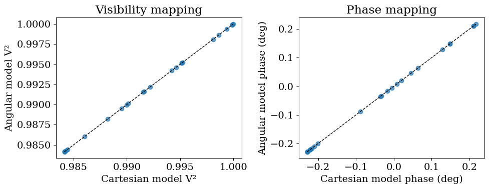

Visibility Models
This tutorial explains how BinaryModelCartesian and BinaryModelAngular work internally, how they interact with OIData, and how likelihoods are built from an OIData instance plus a model class.
Introduce the visibility model parameterizations
We first define the Cartesian and angular binary models on the same baseline geometry, and verify they produce equivalent complex visibilities when parameters are converted consistently.
import sys
from pathlib import Path
import numpy as np
import jax.numpy as jnp
import matplotlib.pyplot as plt
repo_root = Path.cwd()
if not (repo_root / "src").exists():
repo_root = repo_root.parent
src_path = repo_root / "src"
if str(src_path) not in sys.path:
sys.path.insert(0, str(src_path))
from drpangloss.models import (
OIData,
BinaryModelCartesian,
BinaryModelAngular,
loglike,
)
Generate OIData from models
Now we generate synthetic observables from the Cartesian model and package them into an OIData instance.
These models are parametrized functions that take a set of parameters like sep, theta, contrast, and instantiate an object - say, model - which can then apply these to data. You then call model.movel(u, v, wavel) and it evaluates the complex visibilities at those coordinates.
rng = np.random.default_rng(21)
u = jnp.array(rng.uniform(-30.0, 30.0, size=24))
v = jnp.array(rng.uniform(-30.0, 30.0, size=24))
wavel = jnp.array([4.8e-6])
truth_cart = {"dra": 120.0, "ddec": -80.0, "flux": 4e-3}
model_cart_true = BinaryModelCartesian(**truth_cart)
dra = float(truth_cart["dra"])
ddec = float(truth_cart["ddec"])
flux = float(truth_cart["flux"])
sep = float(np.sqrt(dra**2 + ddec**2))
pa = float((np.degrees(np.arctan2(-dra, ddec)) + 360.0) % 360.0)
contrast = float(1.0 / flux)
model_ang = BinaryModelAngular(sep=sep, pa=pa, contrast=contrast)
cvis_true = model_cart_true.model(u, v, wavel)
cvis_ang = model_ang.model(u, v, wavel)
max_complex_diff = float(np.max(np.abs(np.asarray(cvis_ang - cvis_true))))
{
"cartesian": truth_cart,
"angular": {"sep": sep, "pa": pa, "contrast": contrast},
"max_complex_visibility_difference": max_complex_diff,
}
{'cartesian': {'dra': 120.0, 'ddec': -80.0, 'flux': 0.004},
'angular': {'sep': 144.22205101855957,
'pa': 236.30993247402023,
'contrast': 250.0},
'max_complex_visibility_difference': 6.009040731669302e-08}
OIData stores observables, uncertainties, and convention flags (v2_flag and cp_flag) so model outputs can be converted and flattened consistently. It flattens all these data into vectors and keeps track of what kind of observable is being used.
vis_true = jnp.abs(cvis_true) ** 2
phi_true = jnp.rad2deg(jnp.angle(cvis_true))
d_vis = (
0.002 * jnp.maximum(jnp.median(vis_true), 1e-6) * jnp.ones_like(vis_true)
)
d_phi = (
0.01
* jnp.maximum(jnp.median(jnp.abs(phi_true)), 5.0)
* jnp.ones_like(phi_true)
)
vis_obs = vis_true + d_vis * jnp.array(rng.normal(size=vis_true.shape))
phi_obs = phi_true + d_phi * jnp.array(rng.normal(size=phi_true.shape))
data = OIData(
{
"u": u,
"v": v,
"wavel": wavel,
"vis": vis_obs,
"d_vis": d_vis,
"phi": phi_obs,
"d_phi": d_phi,
"i_cps1": None,
"i_cps2": None,
"i_cps3": None,
"v2_flag": True,
"cp_flag": False,
}
)
{
"n_baselines": int(data.u.shape[0]),
"v2_flag": bool(data.v2_flag),
"cp_flag": bool(data.cp_flag),
}
{'n_baselines': 24, 'v2_flag': True, 'cp_flag': False}
How OIData.model(...) builds comparable vectors
OIData.model(model_object) evaluates complex visibilities through the model and converts them to the configured observables (V² and phases here), then flattens to match OIData.flatten_data().
model_vector = data.model(model_cart_true)
data_vector, err_vector = data.flatten_data()
{
"model_len": int(model_vector.shape[0]),
"data_len": int(data_vector.shape[0]),
"error_len": int(err_vector.shape[0]),
"vector_alignment": bool(
model_vector.shape == data_vector.shape == err_vector.shape
),
}
{'model_len': 48, 'data_len': 48, 'error_len': 48, 'vector_alignment': True}
Cartesian vs angular parameter conversions
The Cartesian model uses \((\Delta\mathrm{RA},\Delta\mathrm{Dec}, f)\), where \(f\) is companion/primary flux ratio. The angular model uses \((\rho,\mathrm{PA}, C)\), where \(C\) is primary/companion contrast. The conversion is:
dra = float(truth_cart["dra"])
ddec = float(truth_cart["ddec"])
flux = float(truth_cart["flux"])
sep = float(np.sqrt(dra**2 + ddec**2))
pa = float((np.degrees(np.arctan2(-dra, ddec)) + 360.0) % 360.0)
contrast = float(1.0 / flux)
model_ang = BinaryModelAngular(sep=sep, pa=pa, contrast=contrast)
cvis_ang = model_ang.model(u, v, wavel)
max_complex_diff = float(np.max(np.abs(np.asarray(cvis_ang - cvis_true))))
{
"sep_mas": sep,
"pa_deg": pa,
"contrast": contrast,
"max_complex_visibility_difference": max_complex_diff,
}
{'sep_mas': 144.22205101855957,
'pa_deg': 236.30993247402023,
'contrast': 250.0,
'max_complex_visibility_difference': 6.009040731669302e-08}
vis_cart = np.asarray(data.to_vis(cvis_true))
vis_ang = np.asarray(data.to_vis(cvis_ang))
phi_cart = np.asarray(data.to_phases(cvis_true))
phi_ang = np.asarray(data.to_phases(cvis_ang))
fig, (ax1, ax2) = plt.subplots(1, 2, figsize=(10, 4))
ax1.scatter(vis_cart, vis_ang, alpha=0.7)
line_v = np.linspace(
min(vis_cart.min(), vis_ang.min()), max(vis_cart.max(), vis_ang.max()), 100
)
ax1.plot(line_v, line_v, "k--", lw=1)
ax1.set_xlabel("Cartesian model V²")
ax1.set_ylabel("Angular model V²")
ax1.set_title("Visibility mapping")
ax2.scatter(phi_cart, phi_ang, alpha=0.7)
line_p = np.linspace(
min(phi_cart.min(), phi_ang.min()), max(phi_cart.max(), phi_ang.max()), 100
)
ax2.plot(line_p, line_p, "k--", lw=1)
ax2.set_xlabel("Cartesian model phase (deg)")
ax2.set_ylabel("Angular model phase (deg)")
ax2.set_title("Phase mapping")
plt.tight_layout()
plt.show()

Likelihood wiring from OIData + model class
loglike(values, params, data_obj, model_class) zips parameter names to values, instantiates model_class(**param_dict), evaluates data_obj.model(...), then compares to flattened data with Gaussian errors.
params_cart = ["dra", "ddec", "flux"]
vals_cart = [dra, ddec, flux]
ll_cart = float(loglike(vals_cart, params_cart, data, BinaryModelCartesian))
params_ang = ["sep", "pa", "contrast"]
vals_ang = [sep, pa, contrast]
ll_ang = float(loglike(vals_ang, params_ang, data, BinaryModelAngular))
ll_cart_perturbed = float(
loglike(
[dra + 20.0, ddec - 20.0, flux * 1.6],
params_cart,
data,
BinaryModelCartesian,
)
)
{
"ll_cart_true": ll_cart,
"ll_ang_equivalent": ll_ang,
"ll_cart_perturbed": ll_cart_perturbed,
"true_beats_perturbed": bool(ll_cart > ll_cart_perturbed),
}
{'ll_cart_true': -14.96725845336914,
'll_ang_equivalent': -14.967044830322266,
'll_cart_perturbed': -854.9948120117188,
'true_beats_perturbed': True}
This gives a practical under-the-hood view: model classes define parameter syntax and complex visibilities, OIData defines observable conventions and flattening, and loglike stitches both pieces together for inference workflows.